工具安装指南
安装 firefox 浏览器
官网：https://www.mozilla.org/en-US/firefox/new/
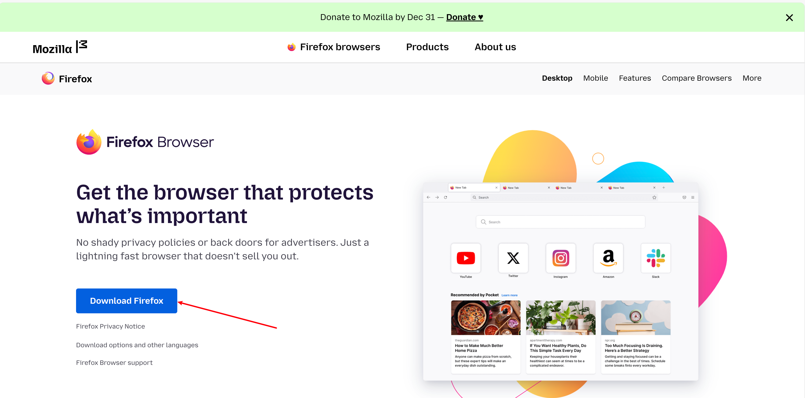
默认安装 firefox。
安装 Hackbar 插件
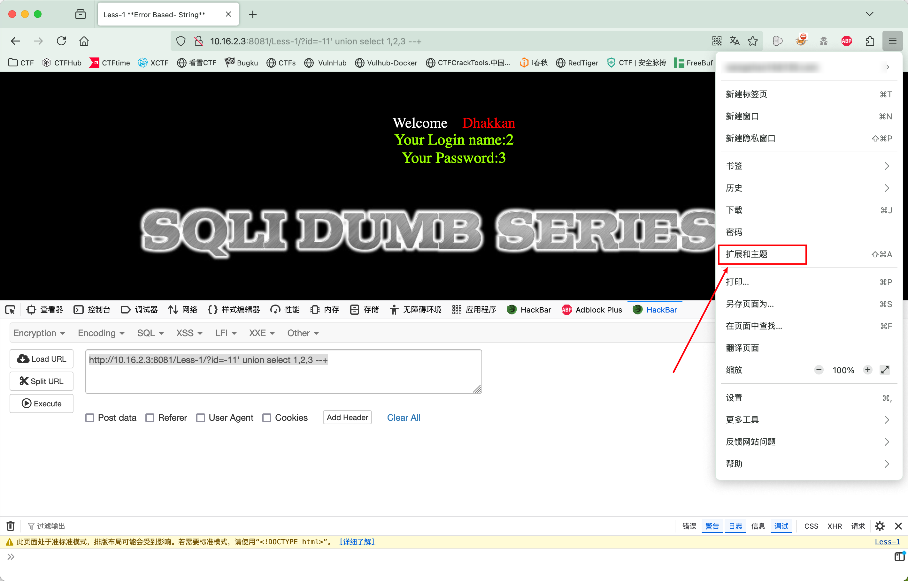
输入 hackbar，按 Enter 键进行搜索
选择 HackBar V2，点击
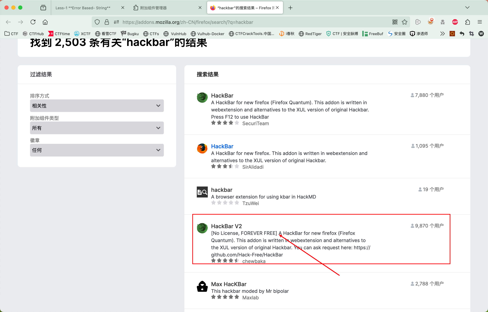
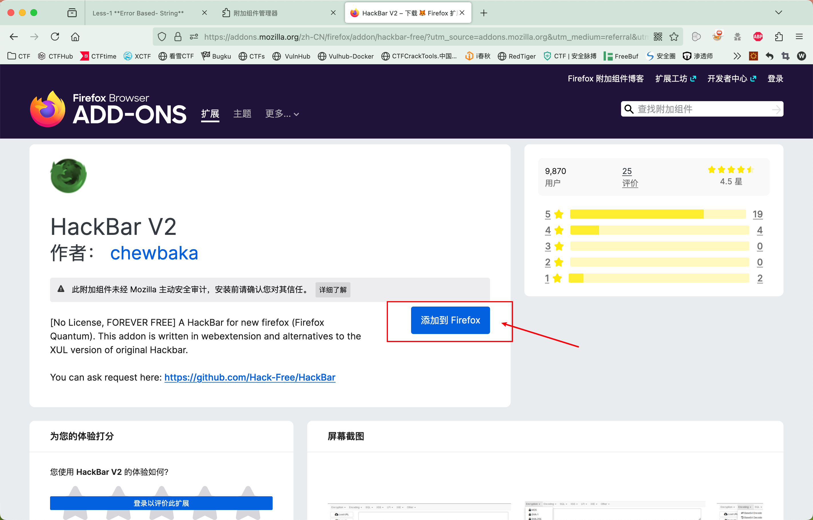
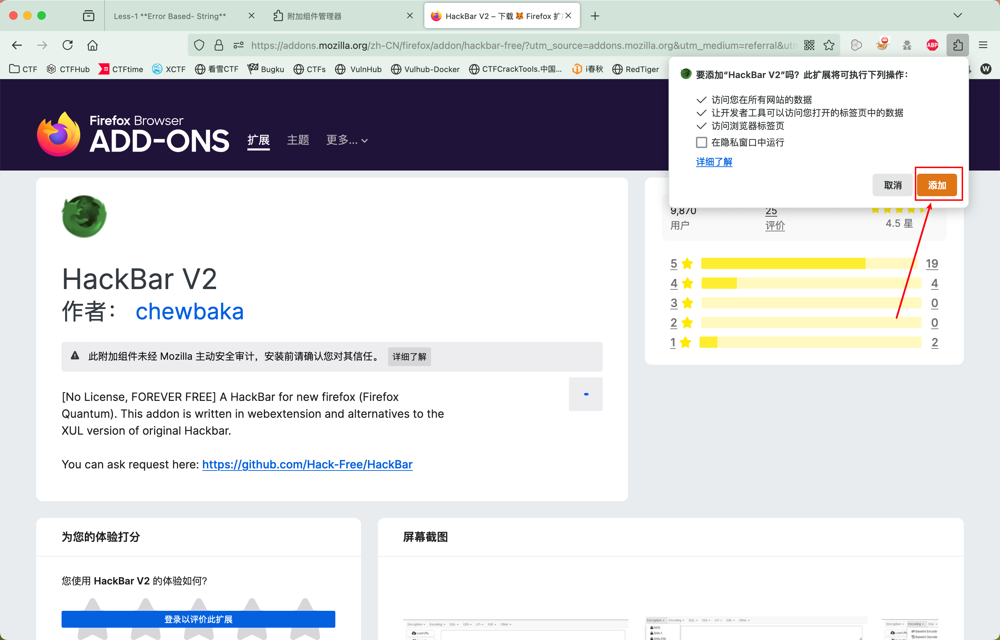
安装完成，按 F12，选择 HackBar 工具
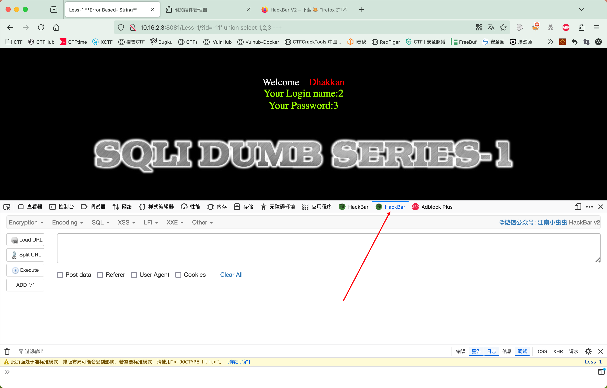
点击 Load URL，可以加载当前的 url
对当前的 url 进行修改，再点击 Execute可以执行修改后的 Url
官网：https://www.mozilla.org/en-US/firefox/new/
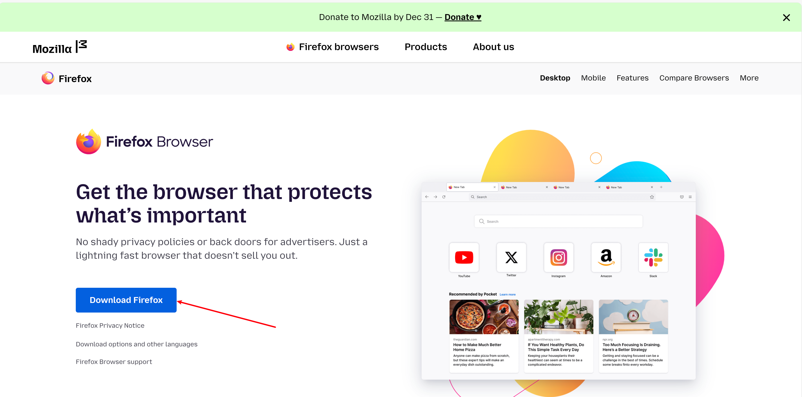
默认安装 firefox。
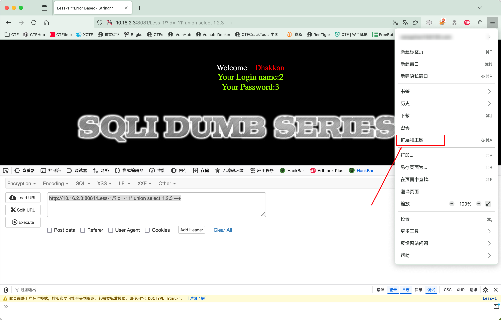
输入 hackbar，按 Enter 键进行搜索
选择 HackBar V2，点击
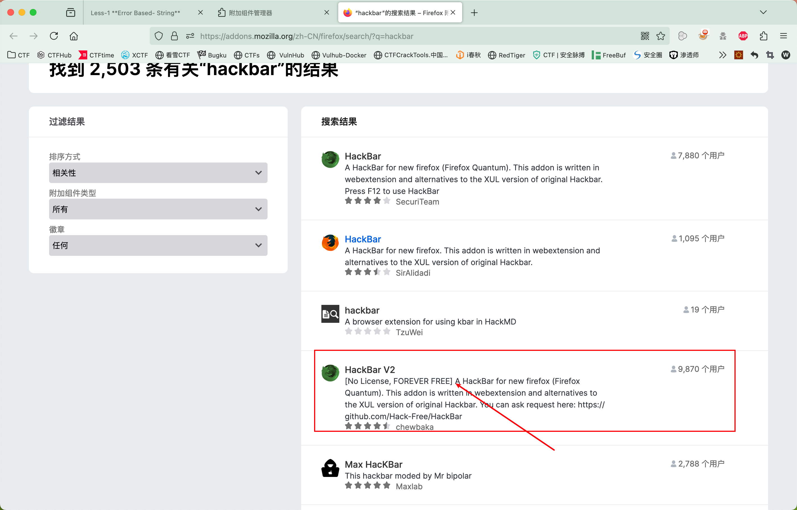
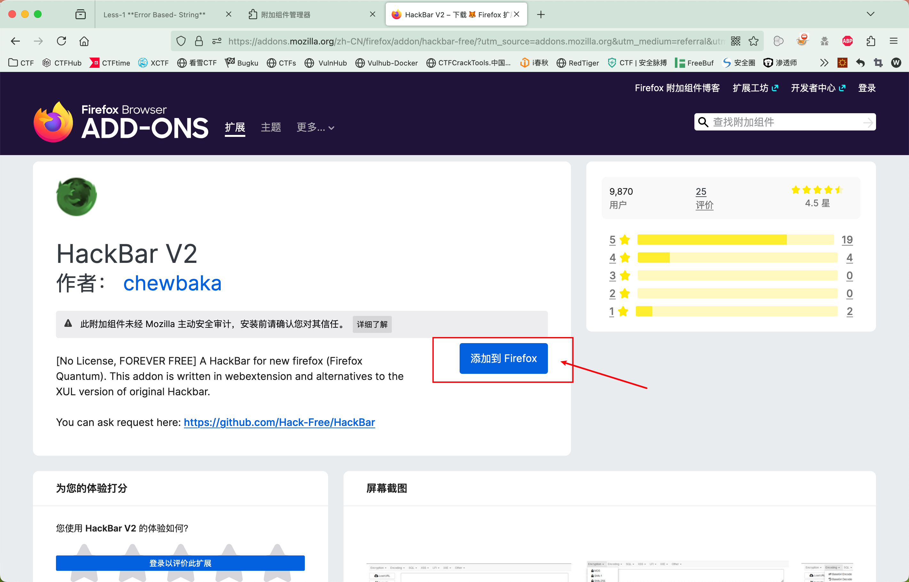
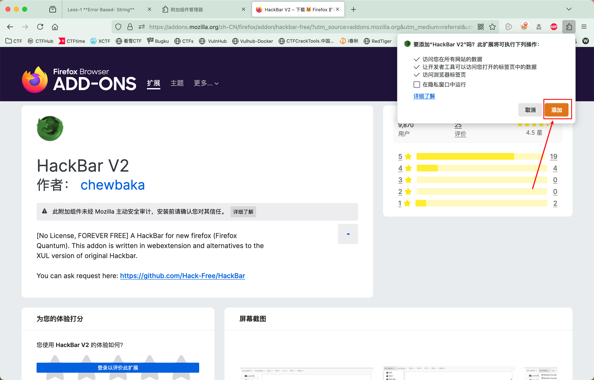
安装完成，按 F12，选择 HackBar 工具
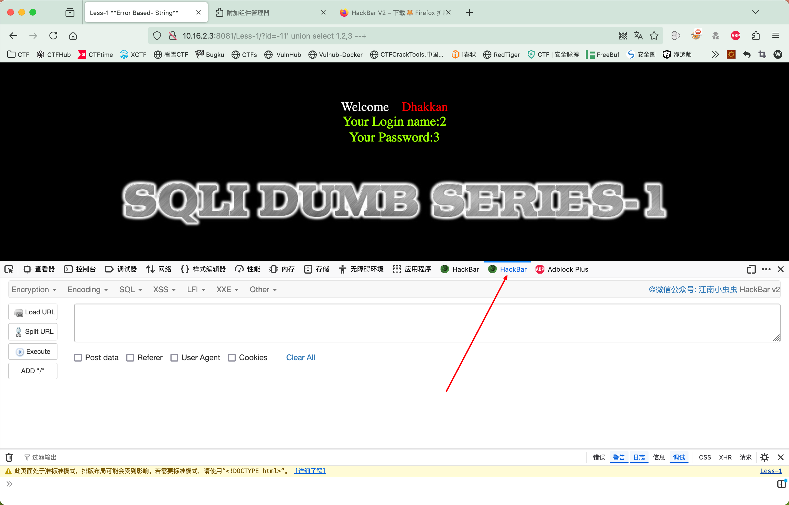
点击 Load URL，可以加载当前的 url
对当前的 url 进行修改，再点击 Execute可以执行修改后的 Url